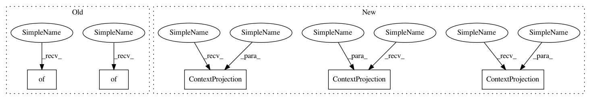

1554a4d7c66a6ea586dd3731c8e5d9bc5dd2dc2e,research/object_detection/meta_architectures/context_rcnn_lib_tf2_test.py,ContextRcnnLibTest,test_attention_block,#ContextRcnnLibTest#Any#Any#Any#,97
Before Change
context_features = tf.ones([2, 2, 3], tf.float32)
valid_mask = tf.constant([[True, True], [False, False]], tf.bool)
is_training = False
projection_layers = {"key": {}, "val": {}, "query": {}, "feature": {}}
output_features = context_rcnn_lib.attention_block(
input_features, context_features, bottleneck_dimension,
output_dimension, attention_temperature, valid_mask, is_training, False, projection_layers)
After Change
context_features = tf.ones([2, 2, 3], tf.float32)
valid_mask = tf.constant([[True, True], [False, False]], tf.bool)
is_training = False
projection_layers = {"key": context_rcnn_lib.ContextProjection(bottleneck_dimension, False), "val": context_rcnn_lib.ContextProjection(bottleneck_dimension, False),
"query": context_rcnn_lib.ContextProjection(bottleneck_dimension, False), "feature": context_rcnn_lib.ContextProjection(output_dimension, False)}
output_features = context_rcnn_lib.attention_block(
input_features, context_features, bottleneck_dimension,
In pattern: SUPERPATTERN
Frequency: 3
Non-data size: 5
Instances
Project Name: tensorflow/models
Commit Name: 1554a4d7c66a6ea586dd3731c8e5d9bc5dd2dc2e
Time: 2020-06-29
Author: kaushikshiv@google.com
File Name: research/object_detection/meta_architectures/context_rcnn_lib_tf2_test.py
Class Name: ContextRcnnLibTest
Method Name: test_attention_block
Project Name: tensorflow/models
Commit Name: 1554a4d7c66a6ea586dd3731c8e5d9bc5dd2dc2e
Time: 2020-06-29
Author: kaushikshiv@google.com
File Name: research/object_detection/meta_architectures/context_rcnn_lib_tf2_test.py
Class Name: ContextRcnnLibTest
Method Name: test_attention_block
Project Name: tensorflow/models
Commit Name: 1554a4d7c66a6ea586dd3731c8e5d9bc5dd2dc2e
Time: 2020-06-29
Author: kaushikshiv@google.com
File Name: research/object_detection/meta_architectures/context_rcnn_lib_tf2_test.py
Class Name: ContextRcnnLibTest
Method Name: test_compute_box_context_attention
Project Name: tensorflow/models
Commit Name: 1554a4d7c66a6ea586dd3731c8e5d9bc5dd2dc2e
Time: 2020-06-29
Author: kaushikshiv@google.com
File Name: research/object_detection/meta_architectures/context_rcnn_meta_arch.py
Class Name: ContextRCNNMetaArch
Method Name: __init__